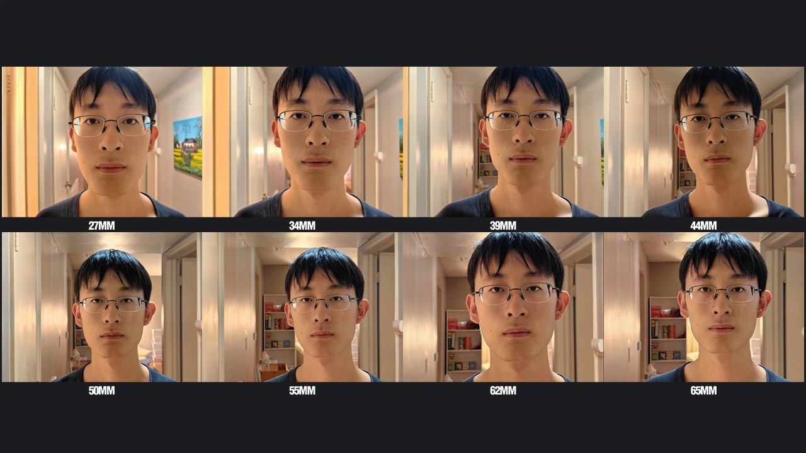
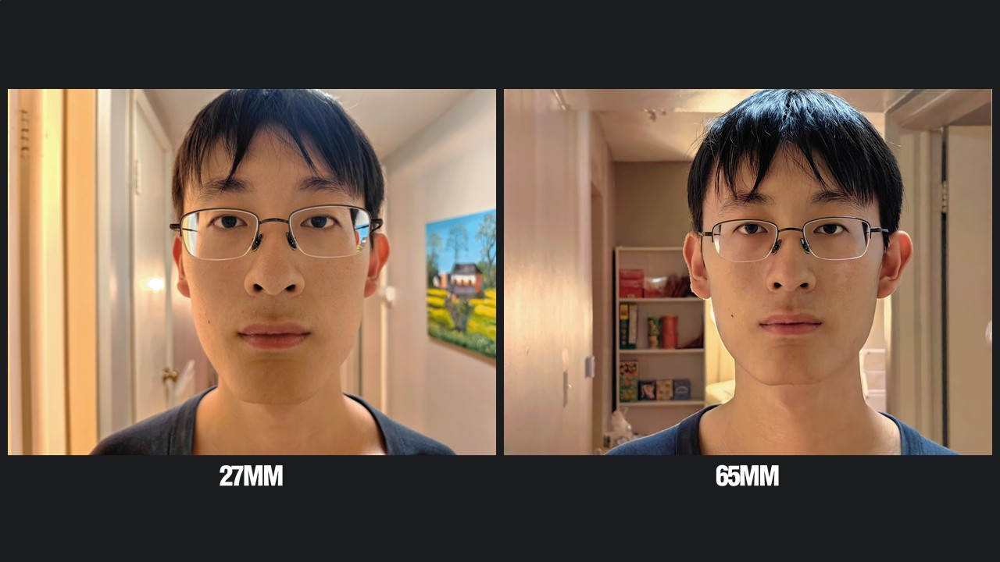
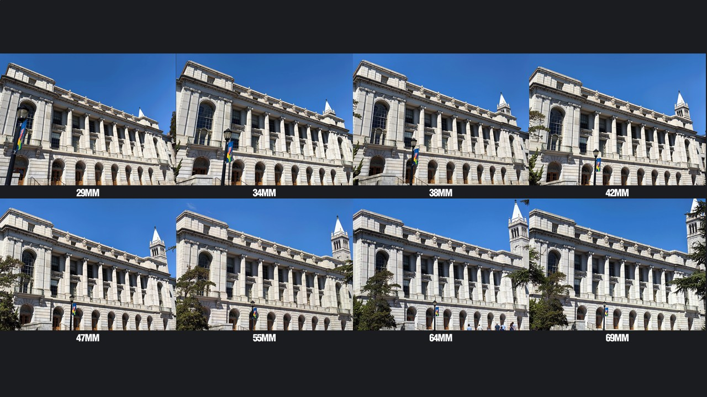
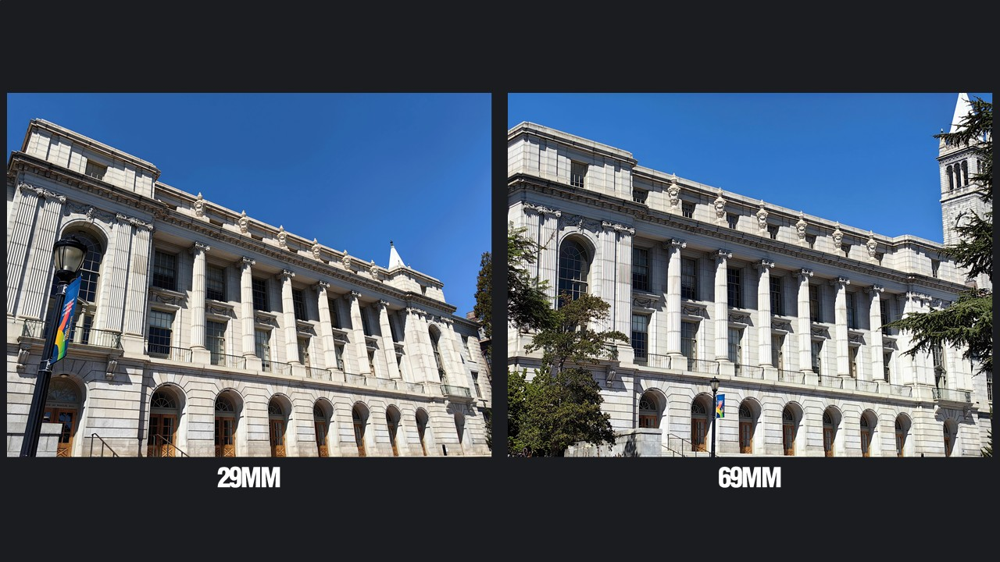
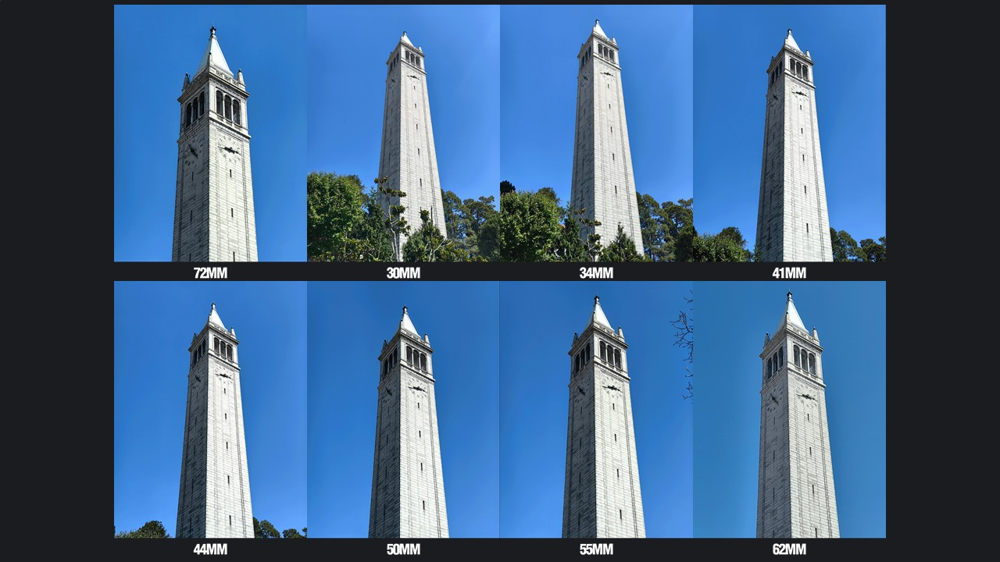
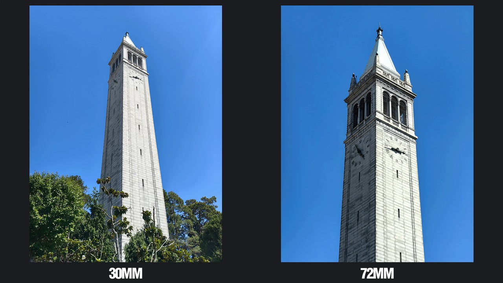

Selfie: The Wrong Way vs. The Right Way
The 65mm photo is better than the 27mm photo because it has less distortion. When we stay close to the camera, our nose and mouth appear much larger than they actually are due to perspective. Additionally, a shorter focal length causes more distortion to our faces.








Architectural Perspective Compression
A lower focal length photo looks better because lenses with shorter focal lengths have a larger depth of field, which creates a stronger stereoscopic effect.